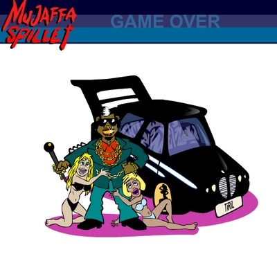

Mujaffa
Mujaffa’s world revolves around cruising the streets of Oslo in your self-styled BMW, in a pursuit to collect gold chains, greet your comrades and score blondes.
Information
- Title: Mujaffas BMW
- Genre: RPG, Sexual, Racing
- Developer: NRK
- System: Internet Browser (PC)
- Length: 2-3 hrs
- Release Date: 2003(NO)
Review
The Danish broadcaster “DR” created the game in the year 2000. Later the Norwegian Broadcasting Corporation, commonly known as NRK, developed the game further. “Mujaffa” is a browser game, under the genre RPG.
"Mujaffa" is a two-dimensional platform game, where you have to avoid obstacles in form of vehicles and bicycles. The graphics are quite simple, as expected, but there are some problems. For example are the hitboxes unreliable. Sometimes I find myself driving right through another car without crashing and vice versa.
You manoeuvre your BMW with the arrow keys, while you can greet your comrades with “Z”, score blondes with “X”, toot with “H” and burnout with “B”. The controls feels a bit non-respondent and shady from time to time, in addition to the fact of the matter that you can just manoeuvre in one direction at once. This means the only satisfying way to manoeuvre is to tap the arrow keys.
At the start of the game, you receive 5000 crowner, to style your BMW at “Bhaias workshop”. The cooler the look of your BMW, the more “street cred” you will receive for greeting your comrades and score blondes. In the stages, which get progressively harder, obstacles will arrive at both sides of the platform and drive through. The main purpose of the game is to get as much street cred as possible, which will give you a ranking when you have either wrecked the car or completed all stages. The bottom rank is “Greengrocer-assistant”, while the top rank is “Top dawg gangsta-boss”.

The top rank: Top dawg gangsta-boss.
Overall, I think “Mujaffa” is a compelling and challenging game, despite the flaws considering graphic and controllers. It makes the game a little frustrating from times to times, but overall you will enjoy the challenge and the game will deliver awarding moments.